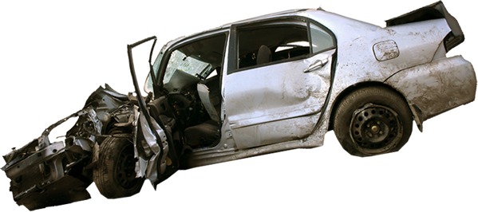
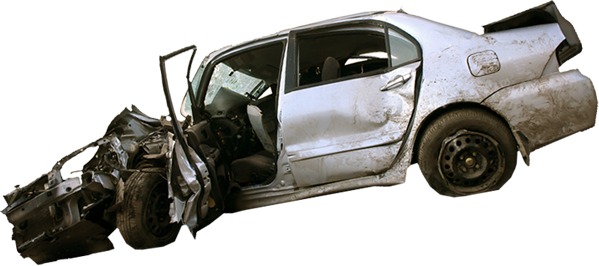
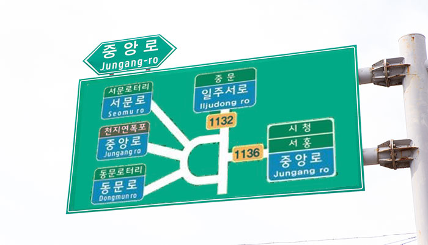
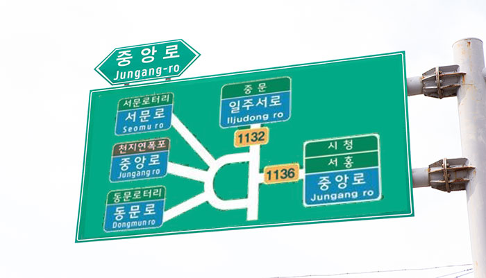
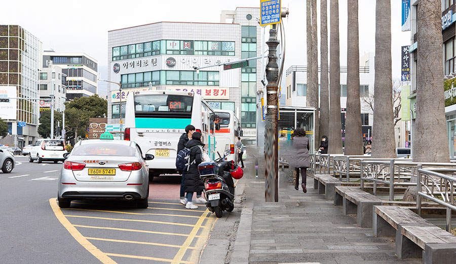
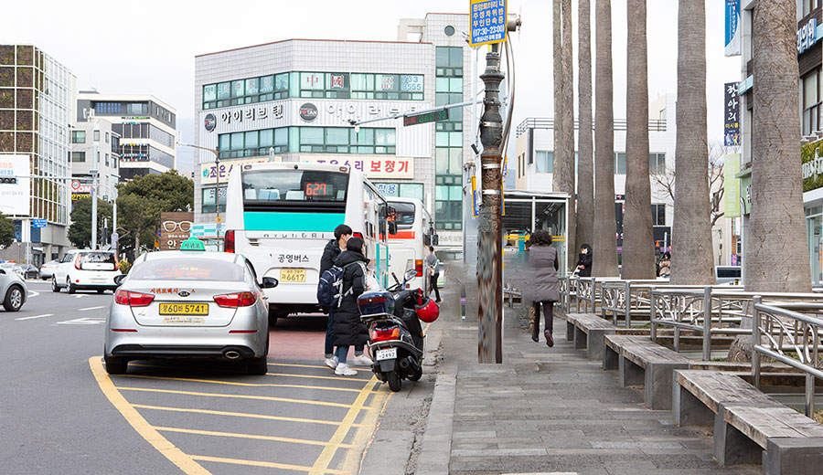

01
첫번째:
추억의 광장이 지옥이 된 이유
지난 12월 18일 제주도 서귀포 구도심에 있는 ‘일호광장’을 찾았다. 제주도의 첫번째 광장이라는 뜻이다. 1990년대 초까지 이곳엔 오일장이 섰고, 서귀포시청과 서귀포경찰서, 시외버스터미널 등이 모여있었다.
27살에 서귀포로 시집을 왔다는 황모 할머니(77)가 현재 왕복 6차선 도로가 된, 등기소 앞의 ‘일주도로’를 손으로 가리키며 말했다.
“겁나 번화하니 잘됐어. 좁긴 해도 골목골목마다 사람들이 내다 팔려고 좌판을 펴놨거든. 살 게 없는데도 구경가곤 했어.”
인터뷰 영상 전체 보러가기
서귀포가 고향인 서귀포시청의 임우남 도시디자인팀장도 “일호광장을 볼 때마다 어머니와 함께 다녔던 오일장이 생각난다”고 했다.
“장날에 어머니는 참깨 한되를 보따리에 싸서 어린 저를 데리고 일호광장에 가셨어요. 곡물전에서 참깨를 돈과 바꾸고 나서 선반내 옆에 있는 오일장 함바집에 갔죠. 맹물국수 한 그룻 시켜서 먹고, 어머니는 제가 남긴 몇 가락 안되는 국수와 국물을 드시곤 했어요.”
서울의 신촌로터리보다는 조금 작고, 혜화로터리보다는 큰 면적의 일호광장은, 과거 행사 때마다 수 천명의 서귀포 시민들이 모여들었던 공간이다. 1981년 남제주군 서귀읍이 서귀포시로 승격됐을 때도 사람들은 광장을 가득 채웠다.
일호광장의 과거 사진들
좌우의 화살표를 클릭해 슬라이드를 넘겨보세요
인터뷰 영상 전체 보러가기
직선도로와 로터리의 잘못된 만남, 광장은 지옥이 되었다
조성이후 60여년이 지난 지금, 일호광장은 주민들에게 어떤 공간이 되었을까. 놀랍게도 일호광장의 또다른 이름은 교통지옥이었다.
시장과 터미널이 이전하면서 일호광장은 사람은 떠나가고 차량만 붐비는 공간으로 변모했다. 과거 시민들의 공간, 구심점이라는 공공성은 잃어버린지 오래다
교통량이 많아지면서 매연이 발생했고, 열섬현상은 심해졌다. 그러나 여전히 나무 그늘, 녹지공간은 부족해 주민들이 쉬다갈 공간은 없었다.
사고다발지점 1위, 제주도에서 가장 운전하기 위험한 곳이라는 오명
가장 큰 문제점은 바로 안전에 있었다. 공사를 거듭하면서 일호광장은 직선도로인 일주동로와 중앙 로터리가 교차되는 특이하고 복잡한 구조를 갖게 되었다. 이 구조로 인해 초보 운전자들은 물론 주민들에게도 제주도에서 운전하기 힘든 지역, 잦은 사고 다발지역으로 기억되게 되었다.
서귀포경찰서가 집계한 교통사고현황에 따르면 지난 한해에만 이 구간에서 7건의 교통사고가 발생했고 올 들어서 현재까지 10건의 사고가 발생해 1명이 사망했다.
 

서귀포경찰서가 집계한 교통사고현황에 따르면 지난 한해에만 이 구간에서 7건의 교통사고가 발생했고 올 들어서 현재까지 10건의 사고가 발생해 1명이 사망했다.
후문 횡단보도에서는 매년 크고 작은 교통사고가 끊이지 않는 곳이다. 이곳 주변에서 음식점을 운영하고 있는 김모씨(43)는 “신호등도 없는데다가 여기가 동산이어서 자동차가 잘 보이지도 않아서 사실 보행자들이 위험한 것이 사실”이라고 말했다.
“신호등도 없는데다가 여기가 동산이어서 자동차가 잘 보이지도 않아서 사실 보행자들이 위험한 것이 사실”이라고 말했다.
직진차로를 회전교차로로 오인시키는 표지판과, 교차로 모서리 부분의 시선을 방해하는 변압기가 있었다. 횡단보도도 인지가 싶지 않았다. 일호광장은 보행자 사고 비율이 높고, 사고가 발생하면 중상자 비율이 높은 지역이기도 했다.
일호광장 교통사고 내역
출처: 도로교통안전공단/ 2017년~2019년
- 중상사고
- 부상사고
- 경상사고
그랬던 일호광장이 드디어 새롭게 재조성 될 기회를 얻었다. 문화체육관광부가 주최하고 한국공예·디자인문화진흥원이 주관한 '2019년 공공디자인으로 행복한 공간만들기' 공모사업에 서귀포시 '사람중심 일호광장 조성사업'이 선정됐기 때문이다.
2019년 하반기부터 착수된 사업은 1년 동안 진행되었다. 일호광장은 어떻게 새로 태어났을까.
02
두번째:
덜어내고 바꾸자 비소로 보이다
문제는 도로 표지판과 변압기였다.
직진차로를 회전교차로로 오인시키는 표지판과, 교차로 모서리 부분의 시선을 방해하는 변압기가 있었다. 횡단보도도 인지가 싶지 않았다. 일호광장은 보행자 사고 비율이 높고, 사고가 발생하면 중상자 비율이 높은 지역이기도 했다.
 

일호광장 로터리 표지판 변경 전후 모습
직진차로를 회전교차로로 오인시키는 표지판과, 교차로 모서리 부분의 시선을 방해하는 변압기가 있었다. 횡단보도도 인지가 싶지 않았다. 일호광장은 보행자 사고 비율이 높고, 사고가 발생하면 중상자 비율이 높은 지역이기도 했다.
후문 횡단보도에서는 매년 크고 작은 교통사고가 끊이지 않는 곳이다. 이곳 주변에서 음식점을 운영하고 있는 김모씨(43)는 “신호등도 없는데다가 여기가 동산이어서 자동차가 잘 보이지도 않아서 사실 보행자들이 위험한 것이 사실”이라고 말했다.
직진차로를 회전교차로로 오인시키는 표지판과, 교차로 모서리 부분의 시선을 방해하는 변압기가 있었다. 횡단보도도 인지가 싶지 않았다. 일호광장은 보행자 사고 비율이 높고, 사고가 발생하면 중상자 비율이 높은 지역이기도 했다.
후문 횡단보도에서는 매년 크고 작은 교통사고가 끊이지 않는 곳이다. 이곳 주변에서 음식점을 운영하고 있는 김모씨(43)는 “신호등도 없는데다가 여기가 동산이어서 자동차가 잘 보이지도 않아서 사실 보행자들이 위험한 것이 사실”이라고 말했다.
인터뷰 영상 전체 보러가기
직진차로를 회전교차로로 오인시키는 표지판과, 교차로 모서리 부분의 시선을 방해하는 변압기가 있었다. 횡단보도도 인지가 싶지 않았다. 일호광장은 보행자 사고 비율이 높고, 사고가 발생하면 중상자 비율이 높은 지역이기도 했다.
후문 횡단보도에서는 매년 크고 작은 교통사고가 끊이지 않는 곳이다. 이곳 주변에서 음식점을 운영하고 있는 김모씨(43)는 “신호등도 없는데다가 여기가 동산이어서 자동차가 잘 보이지도 않아서 사실 보행자들이 위험한 것이 사실”이라고 말했다.
 

일호광장 정류장 근처 전압기 이전 설치 전후
문제는 도로 표지판과 변압기였다.
직진차로를 회전교차로로 오인시키는 표지판과, 교차로 모서리 부분의 시선을 방해하는 변압기가 있었다. 횡단보도도 인지가 싶지 않았다. 일호광장은 보행자 사고 비율이 높고, 사고가 발생하면 중상자 비율이 높은 지역이기도 했다.
횡단보도도 인지가 싶지 않았다. 일호광장은 보행자 사고 비율이 높고, 사고가 발생하면 중상자 비율이 높은 지역이기도 했다.
03
세번째:
먹멍 앉멍, 쉬어가는 광장
횡단보도에 나무를 심어 긴 대기 시간에 시민들이 잠시라도 쉴 수 있는 공간을 만들었다.
이전에는 광장 양쪽으로 있는 버스 정류장 주변에 휴게시설이 전혀 없었다. 정류장 공간도 협소하고, 그나마 작게 마련된 녹지와 정류장이 분리되어서 사실상 이용객들이 녹지 공간을 활용하기 어렵게 되어있었다.
정류장과 녹지 공간이 결합된 휴게 공간을 확보해서 주민들이 쉬어갈 수 있는 편안한 정원같은 공간을마련하고자했다. 동시에 녹지를 통한 열섬현상을 완화하고자했다.
횡단보도에 나무를 심어 긴 대기 시간에 시민들이 잠시라도 쉴 수 있는 공간을 만들었다.
이전에는 광장 양쪽으로 있는 버스 정류장 주변에 휴게시설이 전혀 없었다. 정류장 공간도 협소하고, 그나마 작게 마련된 녹지와 정류장이 분리되어서 사실상 이용객들이 녹지 공간을 활용하기 어렵게 되어있었다.
정류장과 녹지 공간이 결합된 휴게 공간을 확보해서 주민들이 쉬어갈 수 있는 편안한 정원같은 공간을마련하고자했다. 동시에 녹지를 통한 열섬현상을 완화하고자했다.
“다음주엔 음악회가 있다고 하더라구요.
그래서 또 놀러오려구요”
50여 년의 전통을 자랑하는 익산시 중앙동 중앙시장 입구의 간판이 푸근하다. 익산시는 중앙 및 창인동 일대 주차난을 해결하기 위해 대규모 주차장을 준비했다. 재래시장 활성화를 위해 익산시가 지난 1년 노력한 결과다.
04
네번째:
교통 지옥의 오명을 벗다
이제 일호 광장은 더 이상 사고가 빈발하고 운전자들이 두려워하는 곳이 아니다. 사람중심의 안전한 광장으로 재탄생 했다.
로터리에는 보행자 횡단 보도가 새로이 설치됐다. 보행자와 차량의 동선이 정리되면서 사고의 위험이 줄어들었다.
화장실은 새롭게 인테리어를 단장했다. 바로 앞 공간으로 사람들이 모여서 담소를 나눌 수 있는 공간이 마련됐다.
화장실은 새롭게 인테리어를 단장했다. 바로 앞 공간으로 사람들이 모여서 담소를 나눌 수 있는 공간이 마련됐다.
마무리 텍스트. 1년 간의 공사 기간을 마치고 새로 탄생한 중앙시장에는 예전보다 많은 주민들이 찾아오고 있다.
가장 큰 변화는 무엇 하다는 것이다. 변한 것은 주차장 뿐이지만, 이것이 시장으로 사람들을 모았고, 주민들의 삶을 변화시켰다. 우리의 삶에 더 좋은 공간, 디자인이 필요한 이유다. 등등.
1년 간의 공사 기간을 마치고 새로 탄생한 중앙시장에는 예전보다 많은 주민들이 찾아오고 있다.
가장 큰 변화는 무엇 하다는 것이다. 변한 것은 주차장 뿐이지만, 이것이 시장으로 사람들을 모았고, 주민들의 삶을 변화시켰다. 우리의 삶에 더 좋은 공간, 디자인이 필요한 이유다. 등등.